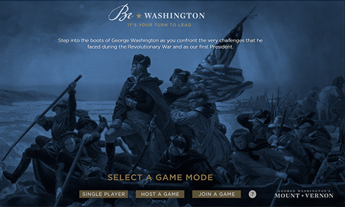

Be Washington Video Game
By Rebecca Gackler

A screenshot from the home screen.
Since I mentioned it in my first post, I’m going to delve more into the game Be Washington. For those of you who did not read my first post, Be Washington is a video game commissioned by Mount Vernon, the house where George Washington resided. In this game, the player chooses between several scenarios in George Washington’s career and gets to hear from various advisors to Washington before making a choice. Then, the player gets to see if their choice matches what Washington chose to do in real life. The game is narrated by Chris Jackson, the first actor to play Washington in the hit Broadway musical Hamilton.
I first played the game while Michigan was in lockdown during the COVID-19 pandemic. During that time, Mount Vernon was hosting free live events virtually. On one day, they hosted a massive round of Be Washington, encouraging viewers to play along. Due to technical difficulties, the viewers were not able to play along, so the woman hosting the event played a single-player mode and encouraged viewers to make suggestions as she played. The game was very engaging. It was a derivation of the interactive movie genre, since players watch footage of actors and scenes and then get to make decisions to drive the plot forward. It is an interesting way to learn about viewpoints of the day and personalize the study of history.
Comparison to other media involving George Washington:
| Title | B.W. | Turn | Hamilton: An American Musical |
|---|---|---|---|
| Type | Video Game | TV Show | Musical |
| Interactive? | Yes | No | No |
| All Ages? | Mostly | No | Sometimes |